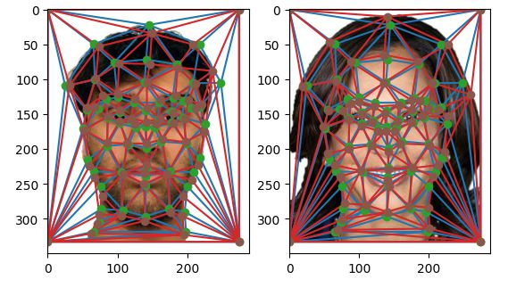
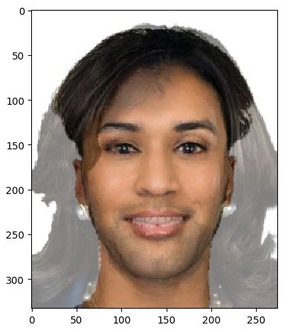
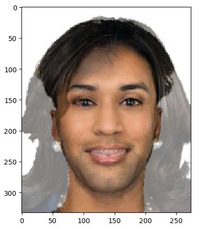
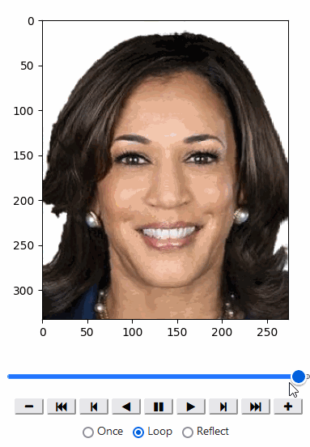
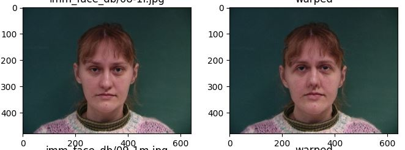
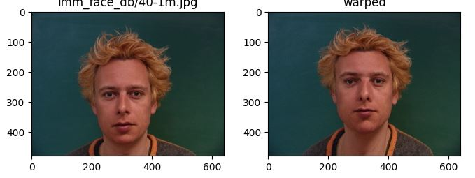
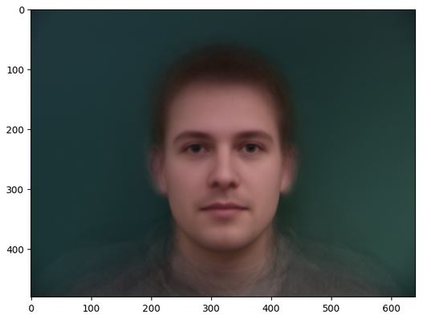
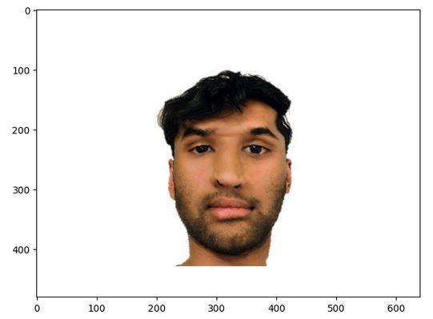
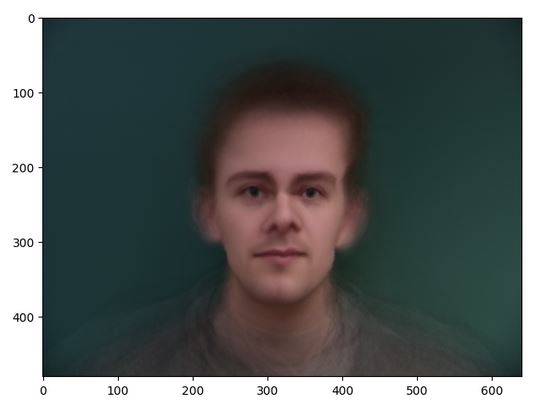
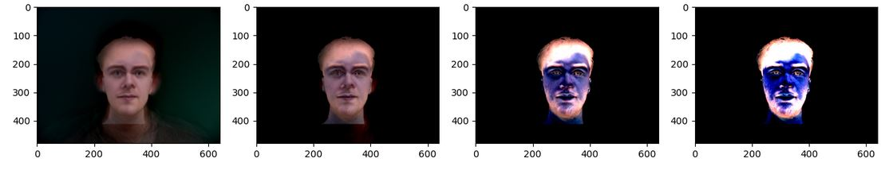

CS180 Project 3
|
Rishi Nath 2024
|
Part 1: Defining Correspondences
I used this suggested online tool to label correspondences.

Part 2. Computing the "Mid-way Face"
Original A and B faces:
 The "Mid-way Face":

The "Mid-way Face":

Part 3. The Morph Sequence
The gif:

In the gif, I also show how the morph looks on variable speeds.
Part 4. The "Mean face" of a population
I calculated the average male face from the imm_face_db dataset. Here are some faces from that dataset warped into the average shape.


Here is the average face, warped into the average shape. (i.e. warp each face into the average male shape, and then average the pixels.)

Here is my face warped into the average geometry.

And, here is the average face warped into my geometry.

Part 5. Caricatures: Extrapolating from the mean
I used the formula: alpha*{Average Face warped to my geometry} + (1-alpha)* {My face}.
Below are results with alpha = 1.2, 1.5, 3, and 5 respectively.
.